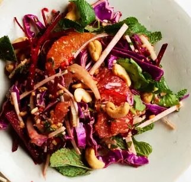

Citrus and Cashew Nut Salad

Ingredients
For the dressing
Method
Stops your screen dimming and locking while your hands are busy. It switches off when you leave this page.
- Make the dressing: put the 2 tbsp red wine vinegar, 3 tbsp lime juice, 75ml olive oil and 1 tbsp light soy sauce in a mixing bowl. Add the 35g peeled ginger root to the liquids with the 3 tbsp light muscovado sugar. Stir in the 2 small hot chillies and stir in.
- Crush the 75g cashews to a coarse, nubbly powder with a pestle and mortar (or the end of a rolling pin), then add to the dressing with the 20 mint leaves and the 20 coriander leaves, torn up a little if they are particularly large. Stir the dressing and set aside.
- Remove the peel and white pith from the 1 grapefruit and 1 large orange, saving as much juice as you can. Separate the segments with a sharp knife and add them to the dressing with any juice.
- Finely shred the 250g red cabbage and 150g fennel and add to the dressing. Peel the 150g celeriac and 250g beetroot, slice thinly, then cut into long, thin matchsticks. Toss with the dressing, check the seasoning and set aside for 30 minutes or more before serving. Add the reserved whole cashews just before bringing the salad to the table.
Notes
The dressing sounds like a lot of trouble. It isn't. Everything just needs a quick blast in the blender or food processor – although I find the texture of the cashew nuts most pleasing when I grind them using a pestle and mortar, leaving them as a rough, gravelly powder. Once made, it is probably best to eat it the same day.